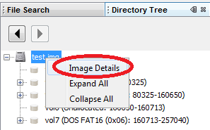

1. To pass the data and show it on the "Result Viewer".
To pass the data and show it on the "Result Viewer", select / click the corresponding node on the Directory Tree.

2. To show the "Image Details"
To see the detail of the image, right click on the image node and select "Image Details".
Note: To know more about "Image Detail" window, click here.

3. To show the "Volume Details"
To see the detail of the volume, right click on the volume node and select "Volume Details".
Note: To know more about "Volume Detail" window, click here.

4. To show the "File System Details"
To see the detail of the file system of a volume, right click on that volume node and select "File System Details".
Note: To know more about "File System Detail" window, click here.